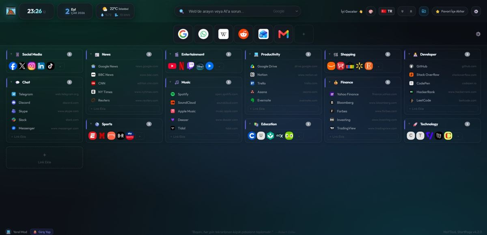

Tarayıcınızı Geleceğe Taşıyın
Buzlu cam estetiği (Glassmorphism), ultra-hızlı yerel mimari ve GitHub Gist bulut senkronizasyonu ile donatılmış yeni nesil başlangıç sayfası paneli.


Güçlü ve Ayrıcalıklı Özellikler
Klasik yer imi kalabalığından kurtulun, üretkenliğinizi zirveye taşıyın.
GitHub Gist Bulut Senkronizasyonu
GitHub Personal Access Token ile tek tıkla bağlanın. Tüm linkleriniz, özel klasörleriniz ve tercihleriniz şifreli Gist üzerinden tüm bilgisayarlarınıza anında eşitlenir.
Sıfır Parlama & Anında Açılış
Senkronize tema önyükleyicisi ile hiçbir parlama (FOIT) yaşanmaz. Saf Vanilla JS ile 50ms altında ışık hızında açılır.
Akıllı Klasör & Canlı Arama
Her klasör için bağımsız İkon (⊞), Liste (📋) veya Kısa Liste modları. Klasör başlığındaki 🔍 büyüteç ile klasör içinde anında arama yapın.
Fare Orta Tuşu ile Gizli Mod
Dişli çarka veya üst kontrol butonlarına fare tekerleğiyle (orta tık) bastığınızda gizli klasörleriniz anında görünür hale gelir.
Canlı Hava Durumu & AI Arama
Open-Meteo destekli küresel hava durumu. Üst arama çubuğunda Google, ChatGPT, Perplexity, Gemini ve DeepSeek arasında tek tıkla geçiş.
Dinamik Temalar & 7 Dil
Karanlık, Aydınlık, Aurora ve AMOLED temaları. Türkçe, İngilizce, Almanca, İspanyolca, Fransızca, Rusça ve Portekizce dillerinde tam destek.
export const StartPageEngine = {
platform: "Google Chromium Manifest V3",
architecture: "Pure Vanilla JS & CSS (Zero React/Node bloat)",
security: "Zero Analytics / Privacy-First chrome.storage",
cloudSync: "Encrypted GitHub Gist API v3",
performance: "Sub-50ms cold start, 100/100 Lighthouse"
};